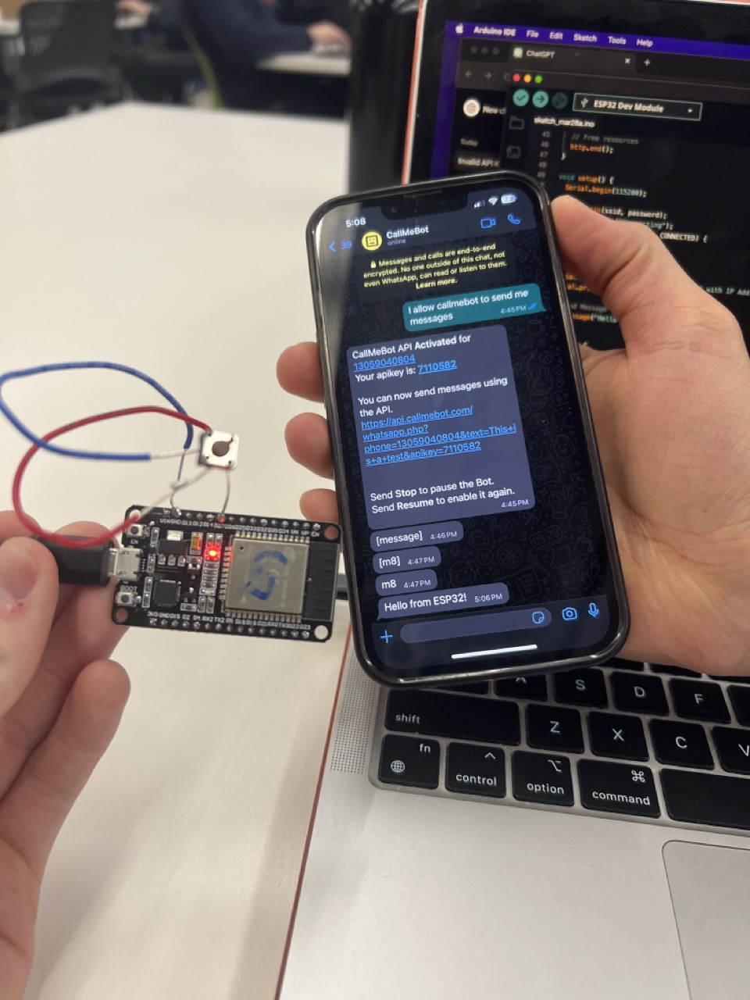

<div class="textcontainer">
<p class="margin"> </p>
<h3>Week 9: Networking</h3>
<p class="margin"> </p>
<div class="flexrow">
</div>
<p class="caption"></p>
<h3>Logic</h3>
This week, I worked with Kabir to program an ESP32 to send messages to a mobile phone through a WhatsApp API.
As two hopeless romantics, Kabir and I liked the idea of being able to let our loved ones know we're thinking of them at any moment. We don't like wasting time on our phones, though, so we looked for something faster.
</p>
We vaguely remembered something in lecture called an "API" that we didn't totally understand, but knew that it made programming simpler. Bingo. We looked online and found something called "CallmeBot," and checked out their website, which turned out to be the exact amount of sketchy we were comfortable with.
</p>
Here's what we learned: The API itself doesn't send the message directly from your microcontroller. Instead, the microcontroller sends an HTTP request to the CallMeBot API, providing the necessary information such as the message content, recipient phone number, and API key.
</p>
The CallMeBot API server receives this request, processes it, and then sends the message to the specified phone number using the messaging service (e.g., WhatsApp) associated with that number. The API server acts as an intermediary between your microcontroller and the messaging platform, handling the complexities of communication and ensuring that the message is delivered correctly.
</p>
We gladly gave the website all of our personal information in return for access to their system and the basic instructions for for sending a message to a phone via ESP32.
</p>
<h3>Execution</h3>
</p>
We did a test run using CallmeBot's stock code and after a few crashes, we had succesfully connected the board to the API and the API to our phone. When plugged in, the ESP32 triggered the API to send a WhatsApp message over Wifi to the specified phone.
<p class="margin"> </p>
<div class="flexrow">
</div>
<p class="caption"></p>
<p class="margin"> </p>
<div style = "width:100%">
<h4>RandomNerdTutorials Basic Code: Send Message on Startup</h4>
<div style = "background-color: #d3d3d3; height: 50vh; overflow: scroll;">
<pre><code>
#include <WiFi.h>
#include <HTTPClient.h>
const char* ssid = "your_wifi_ssid";
const char* password = "your_wifi_password";
const char* apiKey = "your_callmebot_api_key";
void setup() {
Serial.begin(115200);
delay(100);
// Connect to Wi-Fi
Serial.println();
Serial.println("Connecting to WiFi");
WiFi.begin(ssid, password);
while (WiFi.status() != WL_CONNECTED) {
delay(500);
Serial.print(".");
}
Serial.println("WiFi connected");
}
void loop() {
if (WiFi.status() == WL_CONNECTED) {
HTTPClient http;
// Your message to be sent
String message = "Hello from ESP32!";
// Construct the API URL
String url = "https://api.callmebot.com/whatsapp.php?phone=YOUR_PHONE_NUMBER&text=" + message + "&apikey=" + apiKey;
Serial.print("Sending request to: ");
Serial.println(url);
// Send HTTP POST request
http.begin(url);
int httpResponseCode = http.GET();
if (httpResponseCode > 0) {
Serial.print("HTTP Response code: ");
Serial.println(httpResponseCode);
String payload = http.getString();
Serial.println(payload); // Print response payload
} else {
Serial.print("Error code: ");
Serial.println(httpResponseCode);
}
http.end();
}
delay(60000); // Send the message every 1 minute
}
</code></pre>
</div>
</div>
<h3>Roadblocks</h3>
</p>
Our next task was to wire up an ESP32 with a button. Luckily, I had found one in the gender-neutral restroom down that hall, so we used that.
</p>
We had to adapt the code to trigger only when the button was pressed. Although simple in theory, it involved rearchitecting the IDE script: difficult for us beginners!
</p>
We tried adding an if statement within the loop where the rest of the script would only execute if the button was pressed. Unfortuantely, the message sent over and over with no relationship to the button press.
</p>
We then went to ChatGPT for help, and it did a poor job, resulting in 5 crashes. Claude was more helpful, and restructured the code using the boolean data type.
</p>
It also used the INPUT_PULLUP function instead of just INPUT. This probably solved our automatic over-and-over sending problem, because INPUT_PULLUP activates an internal resistor on the board, so the default state is high unless the button is pressed.
</p>
The loop function constantly reads the state. The pin will be low when the button is pressed, so currentButtonState will be "true" when pressed and "false" when released. The code triggers when the pin reads low, or "true".
</p>
As I was writing this documentation, I realized I didn't understand what I was talking about, so I asked Bobby to explain pull up and pull down resistors to me. I feel a lot better about it now.
<p class="margin"> </p>
<div class="flexrow">
</div>
<p class="caption">Bobby explaining how my button works</p>
<p class="margin"> </p>
<div style = "width:100%">
<h4>Button Code</h4>
<div style = "background-color: #d3d3d3; height: 50vh; overflow: scroll;">
<pre><code>
#include <WiFi.h>
#include <HTTPClient.h>
#include <UrlEncode.h>
const char* ssid = "MAKERSPACE";
const char* password = "12345678";
const int buttonPin = 27;
String phoneNumber = "+12066177115";
String apiKey = "6215313";
bool buttonPressed = false;
unsigned long lastButtonPressTime = 0;
const unsigned long debounceDelay = 50; // Debounce delay in milliseconds
void sendMessage(String message) {
// Data to send with HTTP POST
String url = "https://api.callmebot.com/whatsapp.php?phone=" + phoneNumber + "&apikey=" + apiKey + "&text=" + urlEncode(message);
HTTPClient http;
http.begin(url);
http.addHeader("Content-Type", "application/x-www-form-urlencoded");
int httpResponseCode = http.POST(url);
if (httpResponseCode == 200) {
Serial.println("Message sent successfully");
} else {
Serial.println("Error sending the message");
Serial.print("HTTP response code: ");
Serial.println(httpResponseCode);
}
http.end();
}
void setup() {
pinMode(buttonPin, INPUT_PULLUP);
Serial.begin(115200);
WiFi.begin(ssid, password);
Serial.println("Connecting");
while (WiFi.status() != WL_CONNECTED) {
delay(500);
Serial.print(".");
}
Serial.println("");
Serial.print("Connected to WiFi network with IP Address: ");
Serial.println(WiFi.localIP());
}
void loop() {
bool currentButtonState = digitalRead(buttonPin) == LOW;
if (currentButtonState != buttonPressed) {
lastButtonPressTime = millis();
}
buttonPressed = currentButtonState;
if (buttonPressed && (millis() - lastButtonPressTime > debounceDelay)) {
sendMessage("Hello, Finn");
while (digitalRead(buttonPin) == LOW) {
delay(50); // Wait until the button is released
}
}
}
</code></pre>
</div>
</div>
</p>
Other things I learned in this process:
</p> 1. Debouncing is important to make up the difference between your intended single button press and the electronic implementation, where it is likely to read high many times during and after your button press. You can debounce either through delay() or using millis(), as we did in the final code.
</p> 2. ChatGPT is currently inferior to Claude for Arduino code.
<p class="margin"> </p>
<h2>Final Product</h2>
<p class="margin"> </p>
<div class="flexrow">

</div>
<p class="caption">When the button is pressed, the microcontroller sends a message directly to your phone</p>
</div>